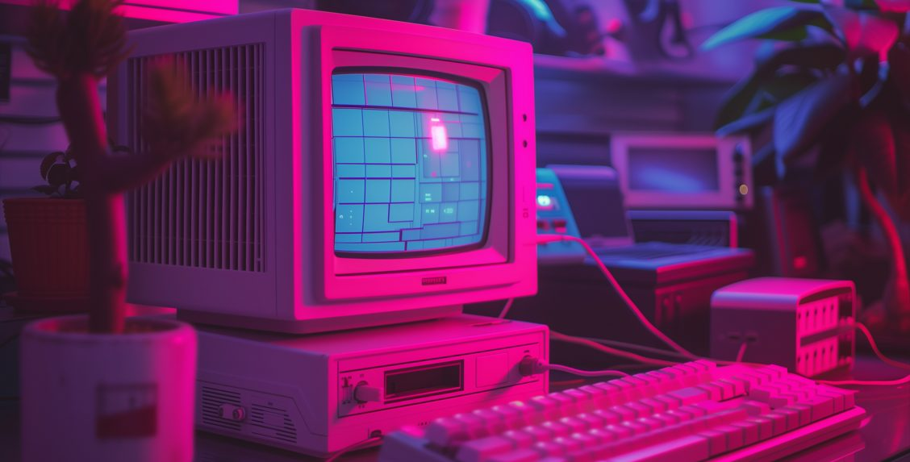

Kaldığın yerden devam et
Oyun kataloğu
Bu aramayla eşleşen oyun yok.
Proje hakkında
RetroGames, klasik oyunları tek bir çatı altında toplayan statik bir oyun portalı. Derleme adımı ve sunucu tarafı yok: HTML, CSS ve JavaScript.
Katalog tek bir veri dosyasından üretilir; filtreleme, arama, oyun detayları ve son oynananlar listesi framework kullanmadan yazıldı.
- 12 oyun
- 0 derleme adımı
- 0 framework
- Canvas ve DOM
